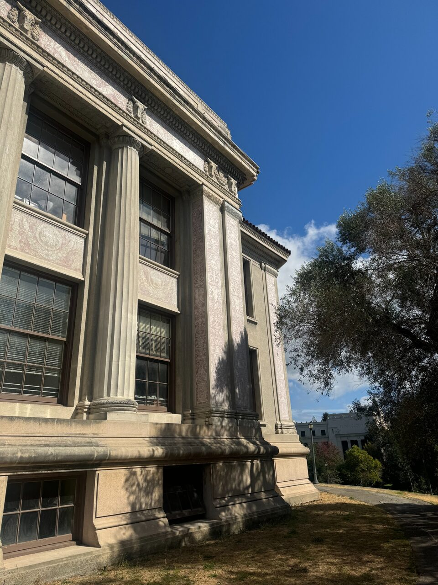
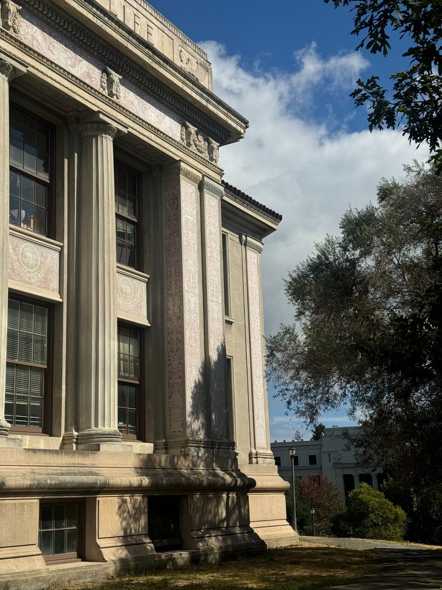
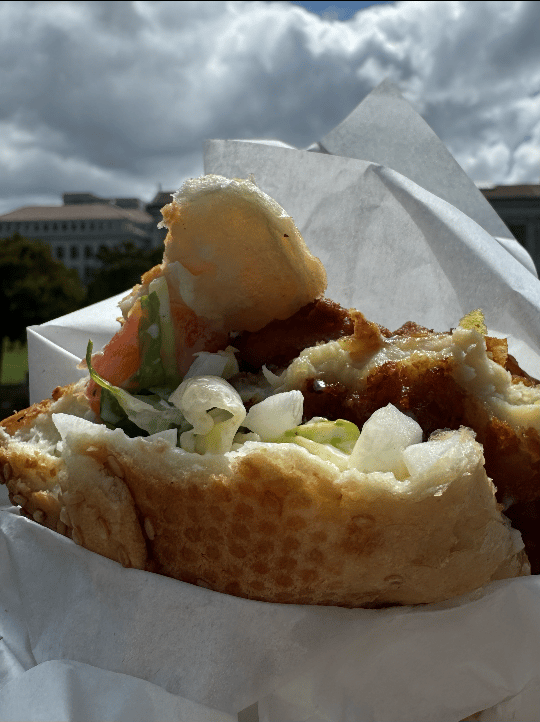

Programming Project #0
Becoming Friends with Your Camera
Part 1: Selfie: The Wrong Way vs. The Right Way
Perspective depends on the ratios of the distances from the camera to different facial features. At close range, a few centimeters of depth make the nose much larger than the ears; from farther away, that same depth difference becomes negligible, and zoom merely enlarges the resulting image.
Part 2: Architectural Perspective Compression


From far away, the depth differences between parts of the building are small relative to their total distance, so near and far parts project at nearly the same scale and the building looks compressed. Moving closer makes those distance ratios more unequal, exaggerating depth, while zoom itself only changes the overall image size.
Part 3: The Dolly Zoom
